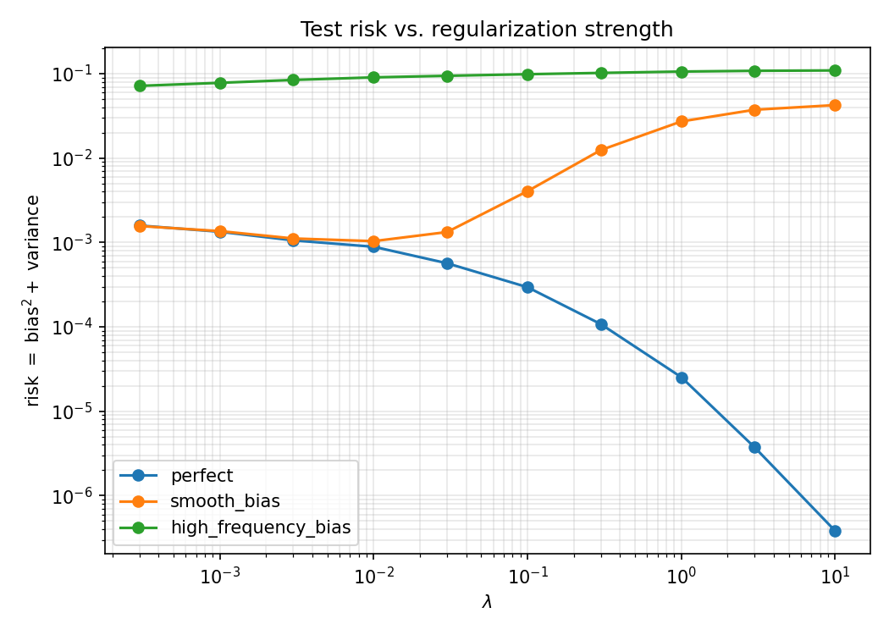
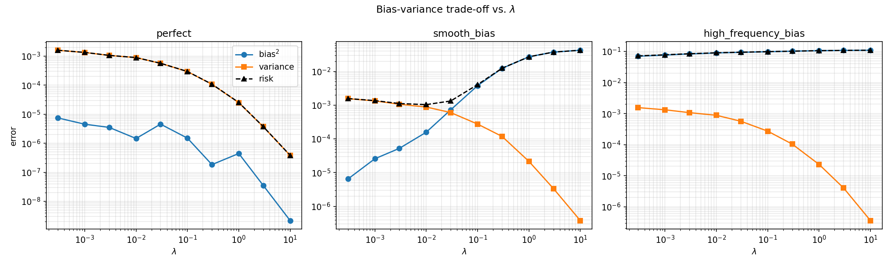
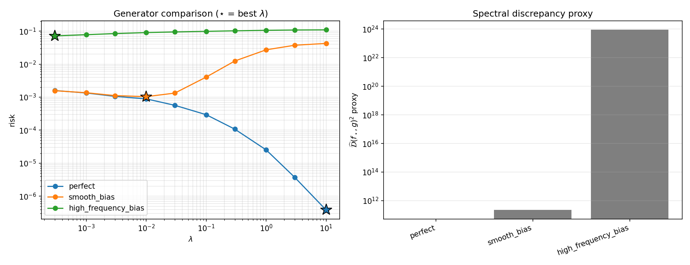

Synthetic-Regularized Kernel Regression
This post looks at a deceptively simple question: if you only have a handful of noisy real labels, but you also have a cheap synthetic generator $g$ that you think resembles the truth, how much should you trust the generator? The method below answers this with one knob, $\lambda$, inside a kernel regressor — and the theory tells us exactly when turning that knob up helps and when it backfires. The whole story is then verified on a tiny 1-D experiment whose numbers are reproduced by the companion notebook. It follows the method of Beyond Real Data: Synthetic Data through the Lens of Regularization.
The idea: regularize toward a synthetic prior
Ordinary kernel ridge regression fits noisy labels and penalizes the size of the function in a reproducing kernel Hilbert space (RKHS) $\mathcal H_K$. Here we instead penalize the distance to a synthetic generator $g$. The estimator solves
The pieces:
- $f_\star$ — the unknown real target function we want to recover;
- $y_n=f_\star(x_n)+\varepsilon_n$ — noisy observations, $\varepsilon_n\sim\mathcal N(0,\sigma^2)$;
- $g$ — a synthetic generator / prior function (cheap to evaluate, possibly biased);
- $K$ — a positive-definite kernel, with RKHS $\mathcal H_K$;
- $\lambda>0$ — how strongly we trust $g$ over the noisy data.
Closed-form estimator
By the Representer Theorem the minimizer lives in the span of the training kernels,
Writing $(K_N)_{ij}=K(x_i,x_j)$ for the $N\times N$ Gram matrix and letting $\beta$ be the coefficients of the part of $g$ visible in the training kernel span, $g_\parallel(x)=\sum_i\beta_i K(x,x_i)$, the objective becomes finite-dimensional:
Setting $\nabla_\alpha J=0$ gives the estimator we actually implement:
The synthetic coefficients $\beta$ are obtained by projecting $g$ onto the training kernel span with a tiny numerical ridge $\eta$ (here $\eta=10^{-8}$):
And predictions on a test grid are a single matrix product:
Reading the boxed formula: the $N\lambda\beta$ term pulls the solution toward the synthetic prior, while $N\lambda I$ shrinks the influence of the noisy labels $y$. When $\lambda\to0$ it reduces to plain kernel interpolation $\alpha=K_N^{-1}y$; when $\lambda\to\infty$ it tends to $\alpha\to\beta$, i.e. $f_N\to g_\parallel$.
Bias–variance decomposition
The population test error, over both inputs and label noise, is
with the usual squared-bias and variance pieces
We estimate these by Monte Carlo: fix the training inputs $x_1,\dots,x_N$, then repeat training over $R$ independent noise draws $\varepsilon^{(r)}$ and evaluate every learned function on a dense test grid. With $\bar f_N$ the average prediction across repetitions,
and $\widehat{\mathcal R}=\widehat{\mathcal B}^2+\widehat{\mathcal V}$. Only the label noise is resampled across repetitions — the inputs stay fixed, which is exactly what the decomposition assumes.
A spectral (Mercer) view of generator mismatch
Why should a generator that is "slightly off" sometimes be catastrophic and sometimes harmless? The answer is spectral. The population kernel operator $(T_K f)(x)=\int K(x,x')f(x')\,dp_x(x')$ has eigenpairs $T_K\phi_j=\mu_j\phi_j$. Expanding both functions in this Mercer basis, $f_\star=\sum_j\theta_j\phi_j$ and $g=\sum_j\omega_j\phi_j$, the theory measures mismatch by
The $1/\mu_j^2$ weighting is the whole point: mismatch in small-eigenvalue directions (the "hard", typically high-frequency directions that an RBF kernel suppresses) is penalized enormously. The risk bound takes the shape
- The first term decreases with larger $N$ and larger $\lambda$ — it behaves like finite-sample variance.
- The second term grows with $\lambda$ whenever $g\neq f_\star$ — it is the bias of trusting the prior.
- Good generators (small $\mathcal D$) let you push $\lambda$ high and win.
- Bad generators, especially wrong in hard directions, force $\lambda$ small.
The minimal experiment
A 1-D regression on $[0,1]$ makes every claim checkable. The target is a smooth two-frequency signal,
observed with Gaussian label noise $y_n=f_\star(x_n)+\varepsilon_n$, $\varepsilon_n\sim\mathcal N(0,\sigma^2)$, through an RBF kernel $K(x,x')=\exp(-\lVert x-x'\rVert^2/2\ell^2)$. We then build three synthetic generators of increasing difficulty:
- Perfect: $g_{\text{perfect}}(x)=f_\star(x)$ — no mismatch.
- Smooth bias: $g_{\text{smooth}}(x)=f_\star(x)+\delta\sin(2\pi x)$ — error in an easy, low-frequency direction.
- High-frequency bias: $g_{\text{hf}}(x)=f_\star(x)+\delta\sin(2\pi\cdot 10\,x)$ — error in a hard, high-frequency direction the RBF kernel damps.
The exact configuration used for the run reported below:
| Setting | Value | Setting | Value |
|---|---|---|---|
| train size $N$ | 64 | test grid | 1000 points |
| noise std $\sigma$ | 0.10 | repetitions $R$ | 200 |
| RBF lengthscale $\ell$ | 0.15 | projection ridge $\eta$ | $10^{-8}$ |
| bias offset $\delta$ | 0.30 | hf frequency | 10 |
| $\lambda$ grid | $\{3\!\times\!10^{-4},10^{-3},3\!\times\!10^{-3},10^{-2},3\!\times\!10^{-2},10^{-1},3\!\times\!10^{-1},1,3,10\}$ | ||
Results
The three generators trace out three qualitatively different risk curves — exactly the three regimes the theory predicts.



Representative numbers
A few representative rows make the three regimes concrete:
| Generator | $\lambda$ | bias$^2$ | variance | risk |
|---|---|---|---|---|
| perfect | 0.0003 | 7.45e−06 | 1.583e−03 | 1.590e−03 |
| 0.01 | 1.46e−06 | 8.887e−04 | 8.902e−04 | |
| 10.0 | 2.17e−09 | 3.803e−07 | 3.825e−07 | |
| smooth bias | 0.0003 | 6.47e−06 | 1.561e−03 | 1.567e−03 |
| 0.01 | 1.57e−04 | 8.801e−04 | 1.037e−03 | |
| 0.1 | 3.78e−03 | 2.749e−04 | 4.060e−03 | |
| 10.0 | 4.246e−02 | 3.78e−07 | 4.246e−02 | |
| high-freq bias | 0.0003 | 7.024e−02 | 1.553e−03 | 7.179e−02 |
| 0.01 | 8.964e−02 | 8.802e−04 | 9.052e−02 | |
| 10.0 | 1.094e−01 | 3.58e−07 | 1.094e−01 |
Best risk per generator is highlighted. Discrepancy proxy $\widehat{\mathcal D}^2$: perfect $=0$, smooth $\approx2.24\times10^{11}$, high-frequency $\approx8.74\times10^{23}$.
The practical lesson: when you design a synthetic generator to regularize a kernel model, getting the smooth, low-frequency behavior right is comparatively forgiving; an error in the hard, high-frequency directions is what really hurts, and the more so the more you trust it.
Reproduce it
The companion notebook re-runs the whole experiment from scratch using only
numpy (and matplotlib for the plot). It implements the boxed estimator
$\alpha=(K_N+N\lambda I)^{-1}(y+N\lambda\beta)$, the Monte-Carlo bias/variance decomposition, and
the spectral-discrepancy proxy, then checks that the reproduced bias$^2$/variance/risk match the
reference numbers reported above (they agree to $\sim\!10^{-9}$, i.e. floating-point noise).